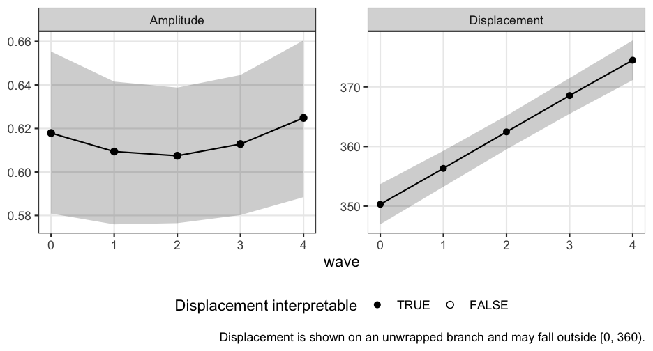
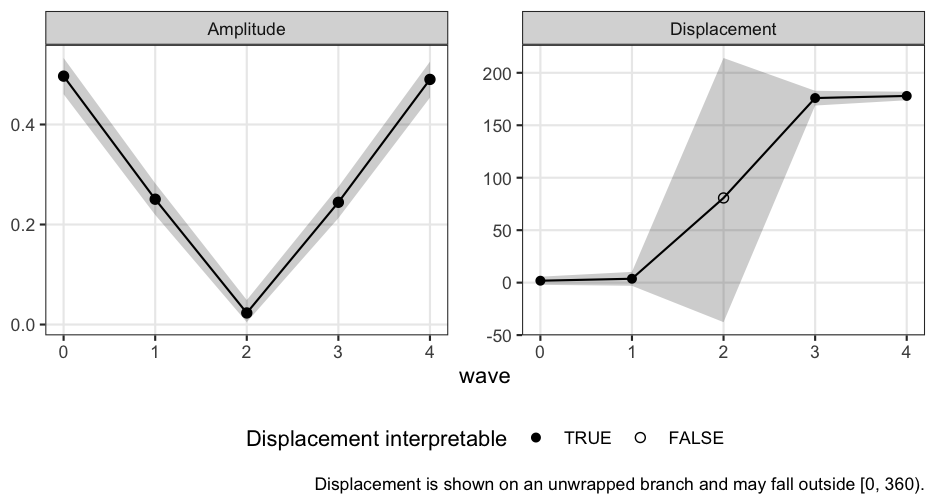

1. The question growth modeling answers
A single Structural Summary Method (SSM) analysis describes one
profile: an elevation
,
an amplitude
,
and a displacement
.
vignette("introduction-to-ssm-analysis") defines these
three parameters. Repeated measurements assess the same persons at
several waves. With them, a new question opens up: how does the
profile change over time? Does the group’s interpersonal style
drift toward warmth, one of the directions on the circle? Does its
distinctiveness (amplitude) grow or fade?
Displacement is an angle, and angles resist ordinary growth modeling. A trajectory drifting from 350° to 10° has moved 20°, not −340°. A linear model fit directly to raw displacements will get this wrong whenever a trajectory crosses the 0°/360° boundary.
This vignette presents the package’s recommended recipe. The recipe avoids the boundary entirely by modeling growth in the Cartesian coordinates . Here and place the profile as a point on a plane. These are the same coordinates that the SSM estimator itself uses. At the end, the recipe converts the fitted trajectories back to amplitude and displacement at each time, , with circular-correct summaries.
The division of labor is deliberate and mirrors the package’s
Bayesian vignette: circumplex does not fit mixed
models. It prepares the coordinate data on the way in
(ssm_parameters_id()). It converts fitted model draws
(draws that describe the uncertainty in the fitted model’s estimates) on
the way out (ssm_draws()). The growth model itself belongs
to a dedicated mixed-modeling package. The reference recipe below uses
glmmTMB. The same stacked-outcome formulation can also
be fit with nlme (shipped with base R), using its
varIdent and corSymm machinery.
2. From repeated measures to a coordinate table
The input to the growth model is a person-by-wave table of SSM
coordinates. ssm_parameters_id() computes
(and
,
,
fit) from circumplex scale scores. Applied to a table with one row per
person per wave, it yields exactly the tidy input that a mixed model
wants.
The package ships a simulated data set,
simulated_growth, with five waves (0 to 4) of octant scores
for 150 persons. Octant scores are scores on eight scales placed 45°
apart around the circle. The data frame has one row per person per wave,
with columns person, wave and the eight
PANO() scales. The group-level displacement drifts from
350° to 10°, deliberately crossing the 0°/360° boundary. The group-level
amplitude stays near 0.6 throughout. ?simulated_growth
states how the data were simulated.
data("simulated_growth")
coord <- ssm_parameters_id(simulated_growth, scales = PANO())
coord$person <- simulated_growth$person
coord$wave <- simulated_growth$wave
head(coord, 3)
#> id n_obs na_rate Elev Xval Yval Ampl Disp Fit
#> 1 1 1 0 0.4595363 0.5697631 -0.1920113 0.6012474 341.37608 0.5912013
#> 2 2 1 0 0.8644617 0.9896316 0.2426116 1.0189363 13.77459 0.7171530
#> 3 3 1 0 0.5354376 0.6640467 -0.2164674 0.6984384 341.94495 0.8516460
#> person wave
#> 1 1 0
#> 2 2 0
#> 3 3 0With no id argument, ssm_parameters_id()
treats each row as its own profile. So coord has one row
per person per wave, and its id column is the row number.
The two assignments copy each row’s person and wave onto it. (Passing
id = "person" would instead average each person’s waves
into one profile, which is not what a growth model needs.)
3. One joint model, not three separate ones
The growth model treats the three coordinates as a
multivariate outcome. Stack them into long format with an
outcome indicator dv, a column that names the coordinate
each row holds. Give each outcome its own intercept and slope. The
person-level random effects are each person’s own deviations from the
group intercepts. Let them be correlated across
outcomes.
The stacked data frame is long, with one row per person,
wave and coordinate. Its columns are person (a factor),
wave, dv (a factor with levels e,
x and y) and value. The
value of e, x and y
comes from the Elev, Xval and
Yval columns of coord. (The reshaping code is
omitted.)
fit <- glmmTMB::glmmTMB(
value ~ 0 + dv + dv:wave + us(0 + dv | person),
dispformula = ~ 0 + dv,
data = long,
REML = TRUE
)
glmmTMB::fixef(fit)$cond
#> dve dvx dvy dve:wave dvx:wave
#> 0.5249198595 0.6085429795 -0.1036244260 -0.0007414075 -0.0010567782
#> dvy:wave
#> 0.0649480442Why joint? The displacement is derived from the estimated mean coordinates at time , and , together. So its uncertainty depends on their joint sampling distribution, including the covariance .
A tempting shortcut is to fit two (or three) univariate mixed models instead. It produces valid-looking output and wrong intervals. Separate fits have independent covariance matrices, one per coordinate. Neither matrix holds the covariance between and . So combining them silently sets .
The and person effects are each person’s stable shifts in and . Our validation simulations included a design with strongly correlated – person effects. In that design, the shortcut’s pointwise coverage drops from the nominal 95% to roughly 86%. Pointwise coverage is how often the interval at one wave contains the true direction. The joint recipe stays at nominal. Strongly correlated person effects are realistic, because profile tilts are rarely aligned with an axis. Do not fit the coordinates separately.
4. From fixed effects to with intervals
The fixed effects are the group intercepts and slopes. They define
the mean trajectory
.
Three steps carry uncertainty through the nonlinear map from
to
.
First, draw coefficient vectors from the multivariate normal implied by
the fixed-effect covariance matrix. That matrix holds the estimated
sampling variances and covariances of the fixed effects. This is the
same large-sample (asymptotic) step that the package’s Monte Carlo
engine takes. Second, evaluate each draw at each wave, which gives that
draw’s coordinates at that wave. Third, hand the per-wave draws to
ssm_draws(). It applies the package’s circular-statistics
machinery (medians and circular means, equal-tailed intervals with
correct wrapping at the boundary).
The first step draws 4000 coefficient vectors from the multivariate
normal distribution with mean fe and covariance matrix
V. The draws are stored in the matrix B, with
one row per draw and one column per fixed effect. Its columns carry the
names of fe, such as dvx and
dvx:wave. (The code that draws them is omitted.)
The second and third steps, at wave 2, look like this. Each draw’s coordinate at wave 2 is its intercept plus 2 times its slope:
wave2 <- ssm_draws(cbind(
e = B[, "dve"] + 2 * B[, "dve:wave"],
x = B[, "dvx"] + 2 * B[, "dvx:wave"],
y = B[, "dvy"] + 2 * B[, "dvy:wave"]
), type = "parameters")
wave2
#>
#> # Posterior Summary:
#>
#> Estimate Lower CrI Upper CrI
#> Elevation 0.524 0.475 0.573
#> X-Value 0.607 0.576 0.638
#> Y-Value 0.026 -0.005 0.055
#> Amplitude 0.607 0.576 0.639
#> Displacement 2.456 359.517 5.184
#> Model FitThe same call at each of the waves 0 to 4 gives one result per wave.
The table trajectory collects them, with one row per wave.
Its columns are wave, the six columns a_est,
a_lci, a_uci, d_est,
d_lci and d_uci from each result’s
$results, and certified from its
$details. (The loop that builds the table is omitted.)
Rounded to two decimals, it reads:
#> wave a_est a_lci a_uci d_est d_lci d_uci certified
#> 1 0 0.62 0.58 0.66 350.30 346.93 353.69 TRUE
#> 2 1 0.61 0.58 0.64 356.33 353.24 359.28 TRUE
#> 3 2 0.61 0.58 0.64 2.46 359.52 5.18 TRUE
#> 4 3 0.61 0.58 0.64 8.55 5.48 11.48 TRUE
#> 5 4 0.62 0.59 0.66 14.48 11.14 17.80 TRUEThe displacement estimates hug the 0°/360° boundary by design. The estimate is near 350° at wave 0, crosses 0° between waves 1 and 2, and reaches about 14° at wave 4. The intervals wrap correctly rather than spanning “the long way around.”
ssm_plot_trajectory() plots a table in this shape
directly. The table has one row per time point, with
a_est/a_lci/a_uci,
d_est/d_lci/d_uci, and optionally
certified:
ssm_plot_trajectory(trajectory, time = "wave")
The displacement panel is drawn on an unwrapped branch. An
unwrapped branch lets angles go past 360° (or below 0°) so that the line
stays continuous. So the trajectory crosses the boundary as one
continuous path instead of jumping a full turn. Values there may
legitimately fall outside
.
Each interval is placed on its estimate’s branch and keeps the width it
was reported with. This holds even for an interval that straddles the
boundary, which is stored with d_lci > d_uci. It is
stored that way because each bound is wrapped onto the circle on its
own.
Placing the intervals by hand is easy to get subtly wrong. The
natural recipe is to “shift each bound by its signed distance from the
estimate.” That recipe silently cannot represent an interval wider than
a half-turn. Such an interval is exactly the near-origin case that
Section 5 is about. ssm_plot_trajectory() handles both
cases: the interval that straddles the boundary and the interval wider
than a half-turn.
5. Certification: when intervals are not interpretable
A direction is only meaningful when the trajectory is far enough from the origin of the plane. As , the draws of become diffuse or bimodal. A quantile interval of them is then not a trustworthy statement about direction.
At each wave, ssm_draws() applies the package’s
certification rule to the amplitude interval. The rule requires the
interval’s lower bound to be at least 0.35 times the interval’s width.
The rule is scale-free: it does not depend on the units of the scores.
ssm_draws() records the verdict in
$details$certified, which is the certified
column above. At any uncertified wave, the
interval is not interpretable. It should be reported as such,
not narrated as a direction.
Every wave in our worked example is certified. Here is a trajectory
where that fails: the group crosses near the origin mid-study (its
coordinate changes sign while
stays near zero). The package ships these data too, as
simulated_growth_origin. It has the same persons, waves and
columns as simulated_growth, and
?simulated_growth describes both. We compute its
coordinates the same way:
data("simulated_growth_origin")
coord2 <- ssm_parameters_id(simulated_growth_origin, scales = PANO())
coord2$person <- simulated_growth_origin$person
coord2$wave <- simulated_growth_origin$waveAs before, coord2 is stacked into long2,
with the same four columns as long. (The reshaping code is
omitted.) The model is the same:
fit2 <- glmmTMB::glmmTMB(
value ~ 0 + dv + dv:wave + us(0 + dv | person),
dispformula = ~ 0 + dv, data = long2, REML = TRUE
)
fe2 <- glmmTMB::fixef(fit2)$condIts 4000 coefficient draws are stored in B2, drawn the
same way as B. (That code is omitted.) The summary at wave
2 is:
mid <- ssm_draws(cbind(
e = B2[, "dve"] + 2 * B2[, "dve:wave"],
x = B2[, "dvx"] + 2 * B2[, "dvx:wave"],
y = B2[, "dvy"] + 2 * B2[, "dvy:wave"]
), type = "parameters")
mid
#>
#> # Posterior Summary:
#>
#> Estimate Lower CrI Upper CrI
#> Elevation 0.512 0.463 0.562
#> X-Value 0.003 -0.026 0.033
#> Y-Value 0.017 -0.011 0.044
#> Amplitude 0.023 0.005 0.049
#> Displacement 80.714 322.335 214.098
#> Model Fit
#> Note: the amplitude CrI lower bound is under 0.35 CrI-widths above zero; the displacement is not interpretable.The printed note is the certification rule firing. At this wave, the amplitude interval sits too close to zero. The displacement interval, which here spans more than half the circle, is not a statement about direction. In our validation simulations of this near-origin case, the caution fires at the degraded wave in essentially every replicate. Meanwhile, the waves far from the origin remain certified, and their intervals keep their nominal coverage.
Assembling this fit’s full trajectory the same way, and carrying the
certified verdict into the table, lets the plot mark the
verdict itself. The table trajectory2 has the same columns
as trajectory. (The loop that builds it is omitted.)
ssm_plot_trajectory(trajectory2, time = "wave")
Uncertified waves are drawn as hollow points on the displacement panel. Read them as gaps in the argument, not as estimates with wide intervals. The amplitude panel shows why: its interval collapses toward zero as the group passes the origin. The displacement interval at such a wave can cover most of the circle. The panel draws it at that full width rather than flattening it into something that looks precise.
The certified column is optional. A table without it
plots the same way, minus the hollow marking and its legend. The figure
then makes no claim about interpretability either way. That is the
honest default when the verdict was never computed.
6. A caution about REML intervals at small samples
The model is fit by REML (restricted maximum likelihood). Its variance components are the variances and covariances of the random effects and the residuals. The fixed-effect covariance matrix used for the draws conditions on the estimated variance components. That is, it ignores their uncertainty. At small sample sizes, this makes the resulting intervals anticonservative (too narrow). This is a property of the mixed-model machinery, not of the SSM transform, so the user must apply the remedy.
With modest N, prefer degrees-of-freedom-adjusted inference or a
parametric bootstrap of the fixed effects over raw normal-approximation
draws. A parametric bootstrap refits the model to data simulated from
the fitted model. Degrees-of-freedom-adjusted inference includes the
Kenward–Roger adjustment for lme4 fits via
pbkrtest, the approximate denominator degrees of
freedom nlme supplies, or
-quantile-based
intervals.
7. The unwrap alternative: angle_unwrap()
There is a second documented recipe. Compute each person’s displacement at each wave. Unwrap each person’s sequence onto a continuous branch. Then fit an ordinary univariate growth model to the unwrapped angles.
# One person's displacement over five waves, drifting across the boundary
d_person <- c(350, 355, 2, 8, 12)
angle_unwrap(d_person)
#> [1] 350 355 362 368 372angle_unwrap() wraps its input into [0°, 360°). Then it
accumulates the shortest signed rotation between successive waves: it
adds up each wave-to-wave change, taking the shorter way around the
circle. By the package’s half-turn convention, an exact 180° step
ascends (it counts as +180°). An NA makes the branch of
every later wave ambiguous, so NA propagates onward. The
unwrapped values live on an ordinary line, so any univariate mixed model
applies. This framing models the mean of the person-level
directions. That is a legitimate (and different) estimand, or
target of estimation, from the direction of the mean trajectory in
Section 4.
Its failure modes are sharp, though, and they are the reason the recipe is the reference:
- Fast movement between waves. Unwrapping assumes successive waves move less than a half-turn. A trajectory sampled too sparsely is unwrapped onto the wrong branch with no warning. So is a person who genuinely swings more than 180° between waves. Near-180° jumps are resolved by convention, not by information the data contain.
- No common branch across persons. Suppose persons occupy genuinely heterogeneous locations around the circle (e.g., half the sample near 90°, half near 270°). Then their unwrapped branches are not comparable, and the fixed-effect “mean trajectory” averages numbers that do not share a scale. The framing has no such requirement.
- Low amplitude. Suppose a person’s amplitude is near zero at some wave. Their observed displacement at that wave is mostly noise. One noisy wave can throw the rest of that person’s sequence onto a wrong branch. This is the same reason that the Section 5 certification exists.
The two recipes agree closely in the concentrated, common-branch regime: everyone well away from the origin, trajectories moving slowly, directions clustered. In that regime, our validation simulations find mean trajectory differences well under a degree. So the choice matters exactly when the unwrap recipe’s assumptions are in doubt.
8. Caveats and upgrades
Two statistical facts about the recipe deserve explicit statement:
- The derived is the direction of the mean trajectory, not the mean of the person-level directions. These differ whenever persons disperse directionally. Neither is wrong, but they answer different questions. Section 7’s unwrap recipe targets the latter.
- The derived shrinks toward zero under directional dispersion. The amplitude of an average profile is smaller than the average of individual amplitudes whenever persons point in different directions. This is the standard SSM aggregation fact, and the growth setting inherits it intact.
Finally, the multivariate normal (MVN) draw propagation used here is
a large-sample approximation. Draw propagation is the Section 4 method
of carrying uncertainty through random draws. It is defensible in the
concentrated regime (Section 7). Outside that regime, the Section 5
certification guards it. The fully model-based upgrade is
projected-normal regression, a regression model for
angle outcomes. The bpnreg package is one
implementation. The method models circular outcomes directly with
person-level structure and gives exact posterior inference for
.
circumplex has no function that fits it. But ssm_draws()
will happily summarize posterior draws produced by any such model.
References
- Girard, J. M., Zimmermann, J., & Wright, A. G. C. (2018). New tools for circumplex data analysis and visualization in R. Assessment, 25(1), 3–20.
- Zimmermann, J., & Wright, A. G. C. (2017). Beyond description in interpersonal construct validation: Methodological advances in the circumplex Structural Summary Approach. Assessment, 24(1), 3–23.
- Cremers, J., & Klugkist, I. (2018). One direction? A tutorial for circular data analysis using R with examples in cognitive psychology. Frontiers in Psychology, 9, 2040.